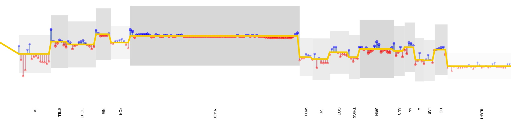
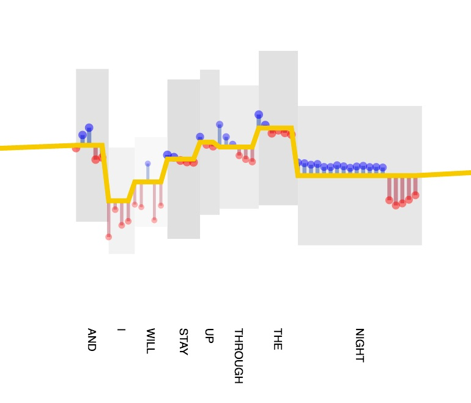
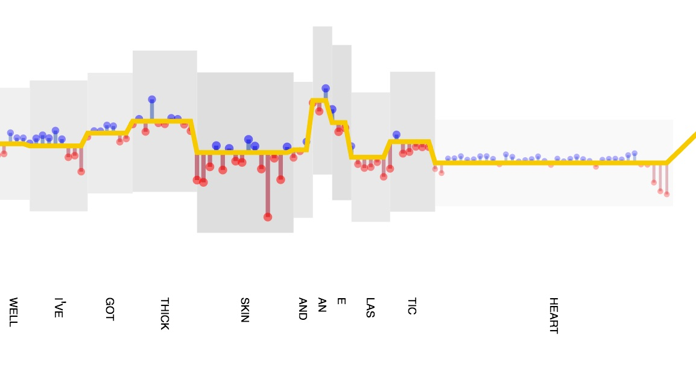
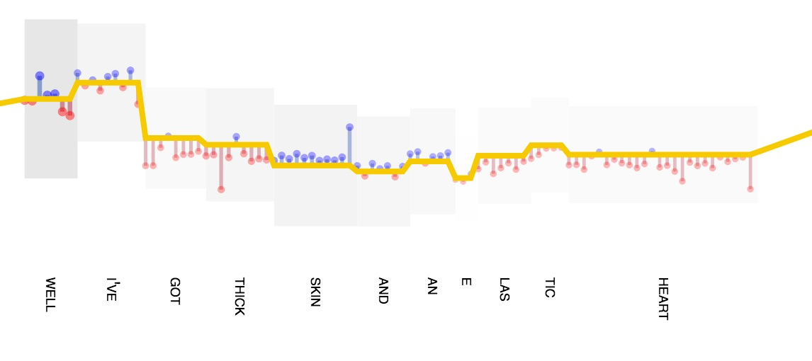

When Sia released her single "Elastic Heart," first in 2013 for
The Hunger Games: Catching Fire and then again in 2014 on her solo album
1000 Forms of Fear, it was a smashing success, receiving critical acclaim on top music charts throughout the world. Described as
electropop, a power ballad, and everything between, "Elastic Heart" features bouncy rhythms and powerful vocals that push the boundaries of pop creativity.
These effects are not accidental; Sia accomplishes them by pushing the limits of the timbral properties of her voice. Timbre, which refers to the quality of a sound that makes it distinguishable from other sounds by way of characteristics other than its pitch and loudness, is a subjective property that can be described in many different words, including "warm," "cool," "bright," and "dark." Acoustically, however, timbre is associated with certain
physical properties of sounds, including harmonic content (harmonic frequencies and spectral envelope), attack and decay, and modulations between them. Thus, while the "warmth" or "brightness" of a sound is psychologically subjective, much research has been done to demonstrate that those perceptions have psychoacoustic correlates.
In this visualization, timbre is visualized in terms of one of these correlates specifically: harmonic content, or resonant frequencies in Sia's voice and shifts between them. We can measure the resonant frequencies of highest intensity, also called formants, for any given sound via its spectrogram (a special kind of graph that shows intensities of different sound frequencies over time for a waveform). For the set of formants of any sound, the first two of highest intensity — F1 and F2 — are the most important for vowel recognition. Lower values of F1, meaning lower frequencies, correspond to "higher" or "close" vowels, such as those in the words he, hit, and cut, while higher values of F1 correspond to middle/low or "open" vowels like those in calm, coat, and who. In this sense, highness refers to the relative position of the tongue body during voicing, resulting in a more open or closed passage through which vocal air travels. Meanwhile, F2, or more importantly the subtractive difference between F2 and F1, corresponds with vowel "backness," or lateral position of the tongue; the smaller the difference, the more "back" the vowel (and the further back the tongue is placed in voicing, such as in the word "whole"), and the larger the distance, the more "front" the vowel (e.g., the vowel in "split").
Through voice training,
singers learn to create interesting effects by modulating these formant signatures in the sounds they produce. In this visualization, mapping timbre by way of measured formants makes it possible to imagine the quality of Sia's voice in acoustic terms that correspond with both our perception of it and its physical properties. If you
listen closely, you can imagine the sound of her voice moving up and down and backward and forward as she enunciates vowels and transitions between them, creating moments of timbral asymmetry that contribute to the song's momentum. Through these techniques, Sia's voice becomes elastic itself.
The visualization has two components. First, transitions in F1 are shown by the gold line; "higher" vowels appear higher vertically in the graph and "lower" vowels appear lower. The gold line follows average F1 shown for each syllable of the song, each of which is shown by linear vertical shifts in the line. Within each syllable, deviations from this average are displayed by blue and red lines and points. If Sia bends her voice to lower vowels within the syllable, a red line and point appear below the central gold line; likewise, if Sia bends her voice to higher vowel formations within the syllable, a blue line and point appear above the gold line. In this way, it is possible to see fluctuations in vowel height across the entire song. In the example below, we see this in action as Sia sings the word "peace."

Differences in timbral quality resulting from differences in F2 are also shown. For each syllable, a gray rectangle illustrates the relative subtractive difference F2–F1 in height and opacity. The height of the block represents the difference between F2 and F1 (F2–F1), which corresponds to the "backness" of the vowel for the given syllable. The smaller the difference F2–F1, and the smaller the block in the diagram, the more "back" a vowel is (i.e., the further back the tongue is placed), and the larger the block in the diagram, the more it is "front" (again in terms of tongue forward position). These spatial relations are reinforced by opacity; darker blocks are more forward and lighter blocks are more back. Individual blocks are shifted up and down according to their respective syllable's average F1. Thus, it becomes possible to see syllables that are more "high" and "front" and others that are more "low" and "back." Below are some examples of modulations in open/close (high/low) vowels combined with modulations in front and back vowels; notice, for instance, how Sia tilts the vowel for the word "night" in the first example upwards at the beginning of the syllable and then downward at the end.



In this analysis, the phonetic software
Praat was used to determine the first two formants for each sound slice at 0.05s time intervals throughout Sia's "Elastic Heart." Lyrics for "Elastic Heart" were retrieved from Google Play and transcribed into International Phonetic Alphabet (IPA) spelling using a
free online transcription tool. The original and IPA-transcribed lyrics were broken into syllables and subsequently aligned with the formants retrieved via Praat using both manual and automatic processes. After this alignment, average F1 and F2 formant frequencies were determined for each syllable, summed over all sampled formants (t = 0.05s) over the duration of the individual syllables. In the case of syllables comprised of diphthongs (
i.e., transitions between multiple vowels within the same syllable), averages were calculated based on averages of the composite vowel sounds.
This visualization was created by
Steven Braun using
D3.js. The full source for this visualization is
available on GitHub. The track
Elastic Heart was analyzed for formant frequencies using
Praat, freeware phonetics and linguistic analysis software.
Elastic Heart is copyrighted and owned by Sia and RCA, Republic, and Lionsgate.